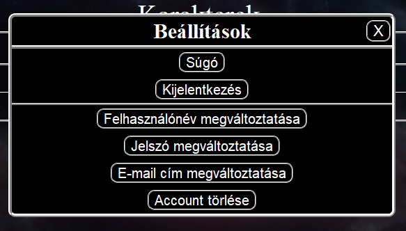

A felhasználó adatainak megváltoztatására az account oldal menüjéből van lehetőség.

A felhasználónév megváltoztatása két lépésben történik. Először meg kell adni egy új, érvényes felhasználónevet, majd a jelszót. Ha ez megvan, és a felhasználónév nem foglalt, a felugró mezőbe be kell írni a regisztrált e-mail címre küldött megerősítő kódot. Elküldés előtt érdemes egy új ablakban megnyitni az e-mail fiókot, mert a böngészőben való fülváltáskor eltűnhet a szövegdoboz, és a folyamatot lehet elölről kell kezdeni.
Jelszó megváltoztatásához először az új jelszót kell beírni, majd biztonsági szempontokból ezt meg kell ismételni. Harmadik mezőbe az aktuális jelszó kerül, majd a felugró mezőbe a regisztrált e-mail címre küldött megerősítő kódot kell írni. Elküldés előtt érdemes egy új ablakban megnyitni az e-mail fiókot, mert a böngészőben való fülváltáskor eltűnhet a szövegdoboz, és a folyamatot lehet elölről kell kezdeni.
E-mail cím megváltoztatásához szükség van az új e-mail címre (melyet még nem regisztráltak), és az aktuális jelszóra. Elküldés után a felugró mezőbe az új e-mail címre küldött megerősítő kódot kell írni. Elküldés előtt érdemes egy új ablakban megnyitni az e-mail fiókot, mert a böngészőben való fülváltáskor eltűnhet a szövegdoboz, és a folyamatot lehet elölről kell kezdeni.
Felhasználói fiók törléséhez az aktuális jelszóra van szükség. A TÖRÖLT FELHASZNÁLÓI FIÓKOT MÁR SEMMILYEN MÓDON NEM LEHET VISSZAÁLLÍTANI!!!